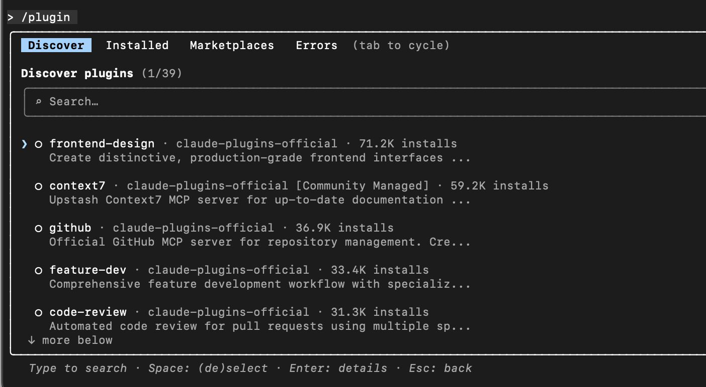

Claude Code プラグイン
プラグイン（Plugin）は Claude Code の中で最高レベルの拡張メカニズムであり、コマンド、エージェント、Skills、フック、MCP、LSP などの機能をパッケージ化、バージョン管理、共有、配布するために使用します。
プラグイン = 再利用可能な Claude Code 拡張機能の集合
1つのプラグインには以下を含めることができます：
- スラッシュコマンド（Slash Commands）
- サブエージェント（Agents）
- スキル（機能説明）
- Hooks（イベントフック）
- MCP サーバー（外部ツール/サービス）
- LSP サーバー（コードインテリジェンス）
プラグインの中核的な目標はただ1つ：
Claude Code の機能を工具箱のように再利用できるようにし、プロジェクトごとに設定を繰り返さないこと
プラグイン vs 独立設定（選び方）
Claude Code は2つの拡張方法をサポートしています：
| 方式 | コマンド形式 | 適したシーン |
|---|---|---|
独立設定（.claude/） |
/hello |
個人利用、単一プロジェクト、迅速な実験 |
プラグイン（.claude-plugin/） |
/plugin-name:hello |
チーム共有、複数プロジェクト、バージョン管理 |
独立設定はいつ使うのか？
- 現在のプロジェクトのみでの使用
- 個人のワークフロー
- まだ安定していない実験的な設定
- 短いコマンド名を使いたい場合（例：
/review）
プラグインはいつ使うのか？
- 必要なのは複数のプロジェクトでの再利用
- 要チームやコミュニティに共有する場合
- 必要になるのはバージョン管理、アップグレード、ロールバック
- マーケットプレイス経由での配布を計画している場合
- 名前空間付きコマンドを受け入れられる（競合を避けるため）
ベストプラクティス：
まず
.claude/で反復開発 → 安定したらプラグインとしてパッケージ化
プラグインの最小構成（必ず覚えること）
my-plugin/ ├── .claude-plugin/ │ └── plugin.json # 插件清单（必需） ├── commands/ # 斜杠命令 ├── agents/ # 子代理 ├── skills/ # Skills ├── hooks/ # 钩子 ├── .mcp.json # MCP 配置 └── .lsp.json # LSP 配置
重要なルール
.claude-plugin/ディレクトリにはのみ配置できるplugin.json- その他のディレクトリはプラグインのルートディレクトリに置く必要がある
プラグインマニフェスト（plugin.json）
プラグインの「身分証明書」であり、以下を決定します：
- プラグイン名
- コマンドの名前空間
- バージョン
- 作者情報
例：
{
"name": "my-first-plugin",
"description": "A greeting plugin to learn the basics",
"version": "1.0.0",
"author": { "name": "Your Name" }
}
主要フィールドの説明：
| フィールド | 役割 |
|---|---|
| name | 一意の識別子 + コマンドの名前空間 |
| description | プラグインマーケットプレイスでの表示 |
| version | セマンティックバージョニング |
| author | 任意項目、帰属の説明 |
スラッシュコマンド（最もよく使われるプラグイン機能）
1、コマンド定義の方法
- 配置場所：
commands/ディレクトリ - 各コマンド = 1つの Markdown ファイル
- ファイル名 = コマンド名
例：
commands/hello.md
対応するコマンド：
/my-first-plugin:hello
2、コマンド内容の例
--- description: Greet the user with a friendly message --- Greet the user warmly and ask how you can help them today.
3、コマンド引数
を使用して$ARGUMENTSユーザー入力を取得：
Greet the user named "$ARGUMENTS" warmly.
呼び出し：
/my-first-plugin:hello Alex
プラグインのローカルテスト（開発者必携）
を使用して--plugin-dirプラグインディレクトリを直接ロード：
claude --plugin-dir ./my-plugin
特徴：
- インストール不要
- 変更後は Claude Code の再起動が必要
- 複数のプラグインを同時にロード可能
claude --plugin-dir ./plugin-a --plugin-dir ./plugin-b
プラグインで他にできること
| 機能 | 用途 |
|---|---|
| Commands | カスタムスラッシュコマンド |
| Agents | 専用サブエージェント |
| Skills | Claude に特定の機能を使うタイミングを教える |
| Hooks | 自動化（ファイル作成後にコマンドを実行するなど） |
| MCP | 外部サービスへの接続（GitHub、DB、API） |
| LSP | コードインテリジェンス（ジャンプ、型チェック） |
プラグインマーケットプレイス（Plugin Marketplace）
プラグインはマーケットプレイスを通じて配布されます。本質的にはプラグインのカタログリポジトリです。
公式マーケットプレイス
- デフォルトで追加済み
- 実行
/plugin→ Discover

プラグインをインストール：
/plugin install plugin-name@claude-plugins-official
プラグインのインストール範囲
| 範囲 | 説明 |
|---|---|
| ユーザー範囲 | 自分だけ、全プロジェクト |
| プロジェクト範囲 | 現在のリポジトリ、チーム共有 |
| ローカル範囲 | 現在のリポジトリ、自分だけ |
推奨：
- チームツール →プロジェクト範囲
- 個人向け効率化ツール →ユーザー範囲
代表的なプラグインの分類
1、コードインテリジェンス（LSP）
- TypeScript、Python、Go、Rust など
- 定義ジャンプ、参照、型エラーを提供
対応する言語サーバーのローカルインストールが必要
2、外部統合（MCP）
- GitHub / GitLab
- Jira / Notion
- Slack / Figma
- Vercel / Supabase
本質：プラグイン = MCP サーバー + 設定
3、開発ワークフロー
- Git コミット、PR
- コードレビューエージェント
- プラグイン開発ツール
プラグイン管理のよく使うコマンド
/plugin # 打开插件管理器 /plugin install # 安装插件 /plugin uninstall # 卸载 /plugin enable/disable # 启用 / 禁用 /plugin marketplace add # 添加市场 /plugin marketplace rm # 移除市场
から.claude/プラグインへの移行（中核となる考え方）
| 移行前 | 移行後 |
|---|---|
.claude/commands |
plugin/commands |
.claude/agents |
plugin/agents |
settings.json hooks |
plugin/hooks/hooks.json |
移行後：
- プラグインバージョンが優先的に有効になる
- 古い設定を削除でき
.claude/重複を避けられる
どんなときに絶対にプラグインを使うべきか？
- すでに安定した Claude ワークフローを持っている
- あなたが繰り返しコピーしている
.claude/ - チームメンバーが「これ、どう設定するの？」と聞き始めた
- Claude を IDE プラグインのように制御可能にしたい
その他の拡張プラグインは、Claude Code が「個人向け AI アシスタント」から「エンジニアリングツール」へと進化する分水嶺です
クリックしてノートを共有
ノートは本記事の内容を拡張したものである必要があります！
記事の投稿はこちらをクリック
登録招待コードの取得方法
ノートを共有する前には必ずログインしてください！
登録招待コードの取得方法